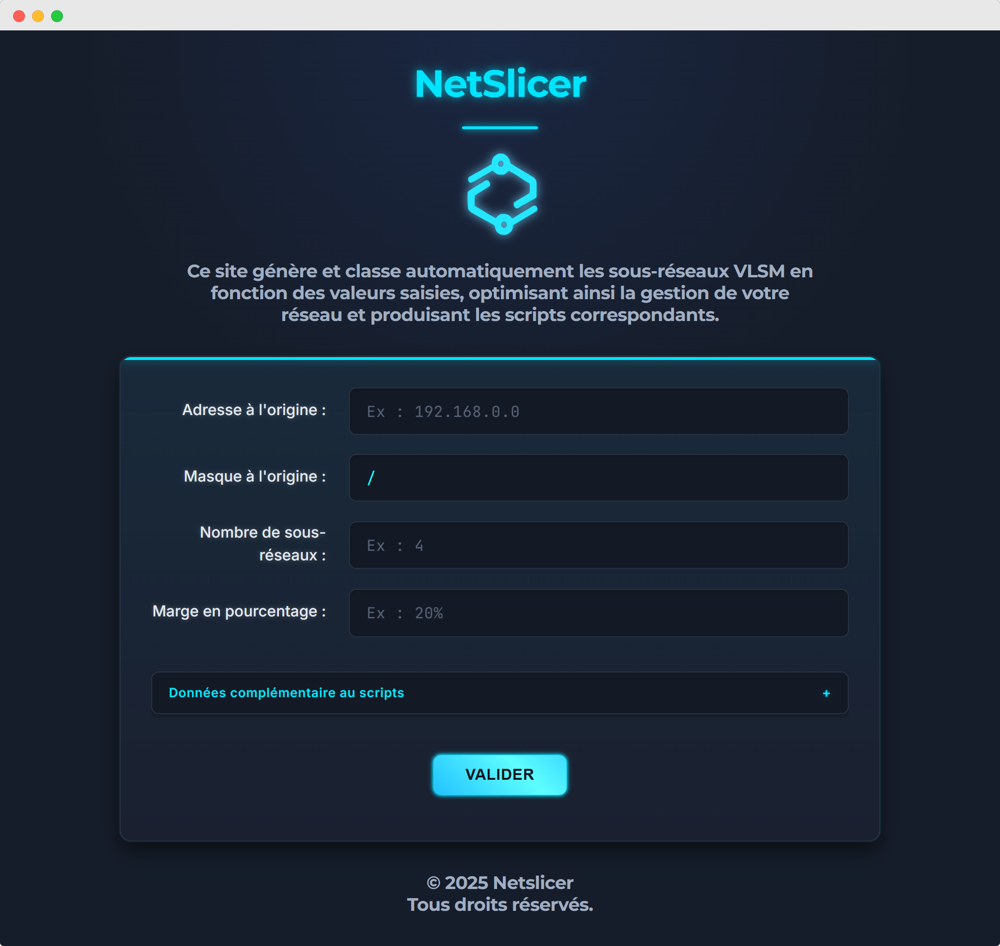
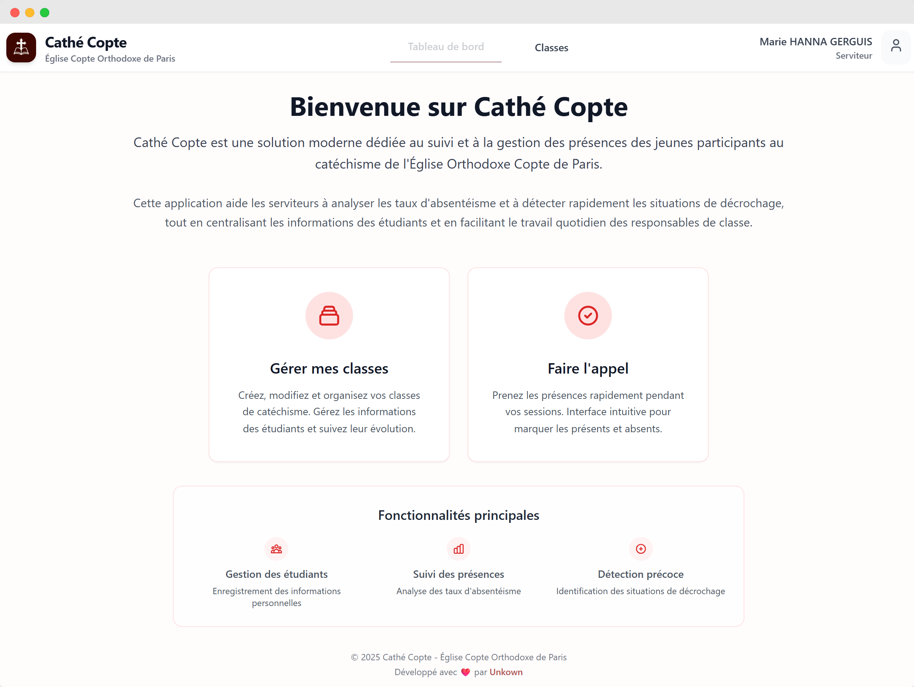
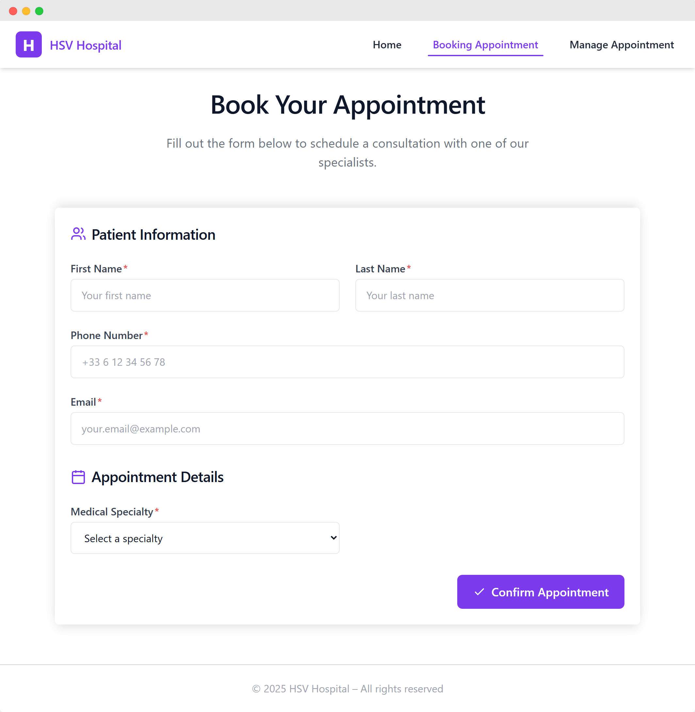

Passionate about technology from a young age, I’m Marc Awad, a Full-Stack Developer who loves turning ideas into clean, scalable, and fully deployed web projects. I enjoy working on applications that are not just functional but visible online, exploring modern, free technologies like Vercel and Supabase to quickly build interesting full-stack projects.
Meticulous and organized, I value precision in every line of code and structure in every project. GitHub and project management are part of my daily workflow to ensure smooth collaboration and high-quality results.
Curious, driven, and inspired by open-source culture, I approach every challenge with a growth mindset, always learning and experimenting with new tools. Check out my favorite projects to see my work live in action.
Projects
NetSlicer
Full-stack developer on a 5-day academic project, responsible for development, deployment, and project management, creating a web tool to automate VLAN setup on Windows Server and Cisco devices, significantly reducing manual network configuration time. Technologies:HTMLCSSJavaScriptPowerShellPython View Live Project →

Cathé Copte
Full-stack and DevOps developer for a volunteer project at my church, handling everything from architecture, database design, and backend/frontend development to deployment, creating a web application to manage youth attendance in Coptic Orthodox catechism classes with dashboards and absence tracking to simplify community management. Technologies:NuxtSupabaseVercel View Live Project →

HSV Hospital
One of my first course projects, where I gained hands-on experience in UI/UX design, system architecture, and workflow orchestration, developing an appointment booking system for patients that streamlines hospital processes and enhances user experience. Technologies:Vue.jsTypeScriptFirebaseVercel View Live Project →

Education
Sup de Vinci
Bachelor's degree in Computer Science (2023 – 2026)
Currently pursuing my degree at Sup de Vinci, building expertise in software development, web and mobile technologies, cloud computing, and cybersecurity. Participating in collaborative projects simulating real-world software development, gaining hands-on experience with React, Node.js, TypeScript, Tailwind CSS, and other modern web technologies.
UPEC (University of Paris-Est Créteil)
Engineering Sciences (2020 – 2022)
Studied a a multidisciplinary engineering curriculum covering mathematics, mechanics, electronics, and programming. Gained strong analytical and problem-solving skills applicable to complex technical challenges, forming a solid foundation for current computer science studies.
Experience
Prévoir
Full-Stack Developer (October 2025 – Present)
Contributed to internal software projects and a React migration. Developed a shared component library to standardize team workflows, improving code quality, efficiency, and collaboration within the digital team. Technologies:ReactTypeScriptTailwindC#